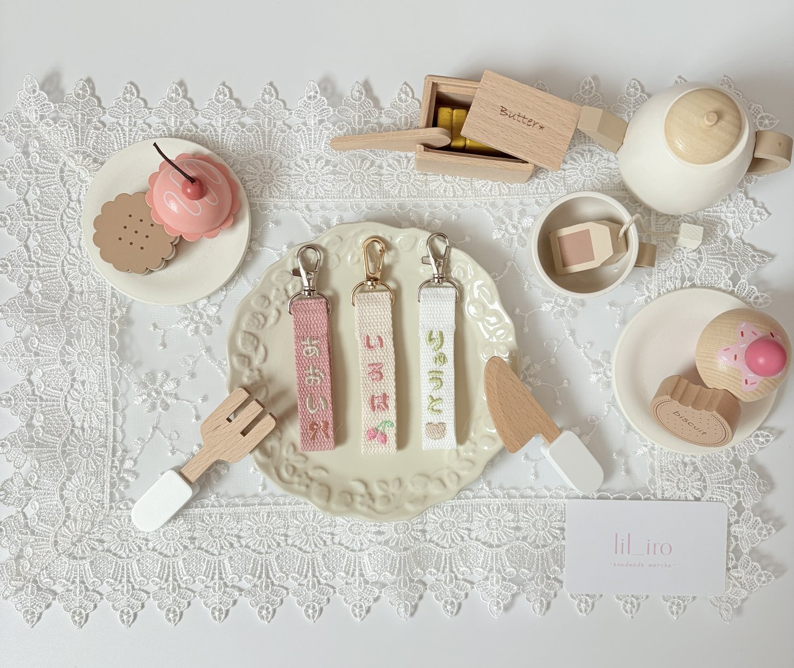
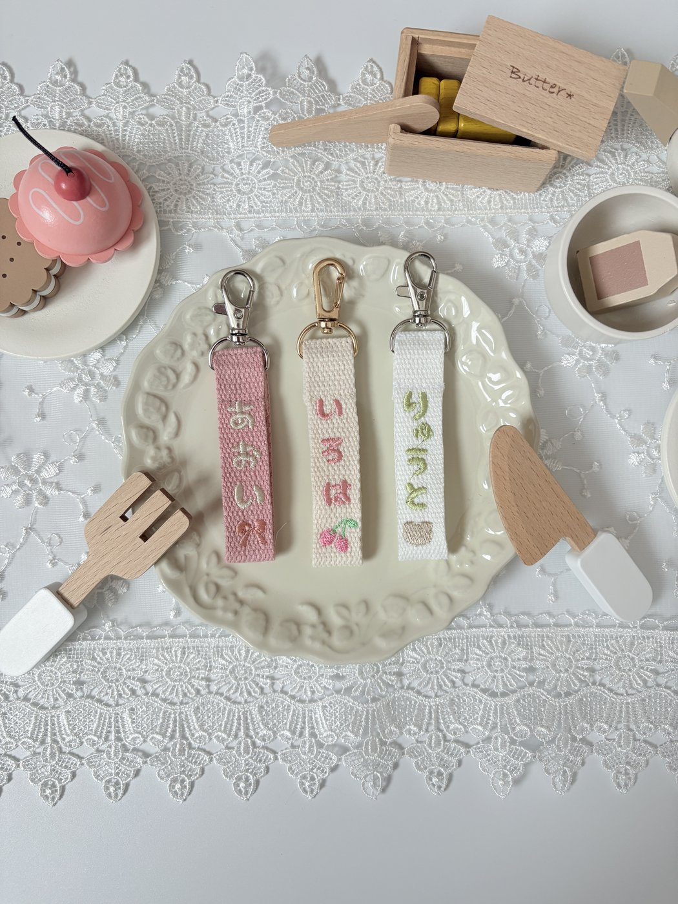
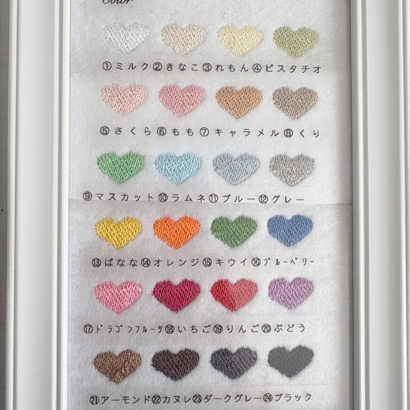

保育園バッグの名前つけ、どうしてる？
付け替えできる刺繍ネームタグのすすめ

保育園の入園準備でやってくる「名前つけ」。洋服やコップはスタンプやシールでパパッと、通園バッグも直接書けばひとまずOK——といえば、そうなんです。
でも、毎日背負って通うバッグやリュックだからこそ、ただ名前を書くだけじゃちょっともったいないかも。この記事では、名前つけをしながら「うちの子だけの特別な一品」にできる、付け替えできる刺繍ネームタグという選択肢をご紹介します。
「ただの名前つけ」を、ちょっと特別に
通園バッグに油性ペンで名前を書いても、もちろん用は足ります。でも、保育園ではお友だちと似たようなバッグが並ぶもの。そこにかわいい刺繍のネームタグがひとつ付いているだけで、ぐっと「自分だけのバッグ」になります。
まだ字が読めない年齢でも、お名前と一緒に入れたモチーフ（絵柄）が目印になって、自分の持ち物をすぐ見つけられる。既製品にはない特別感で、お子さんのお気に入りにもなります。名前つけが、ちょっとうれしい時間に変わりますよ。
そんなバッグには「付け替えできる刺繍ネームタグ」
毎日使うバッグ類にちょうどいいのが、金具で付け替えできる刺繍のネームタグです。

▲ お名前を刺繍したネームタグ。金具でバッグに付け替えられる
刺繍ネームタグが保育園バッグに選ばれる理由
・糸で刺繍したお名前だから、洗っても色あせ・剥がれの心配が少ない
・金具で付け替えできるから、バッグを買い替えても、きょうだいにお下がりしても付け替えるだけ
・ひらがなのお名前＋選べるモチーフだから、まだ字が読めない年齢でも「これが自分のしるし」と覚えやすい
・既製品にはない「うちの子だけ」の目印になって、お子さん自身も自分の持ち物が見つけやすい
サイズも文字も色も、お好みでカスタム
lil iro babyの名入れ刺繍ネームタグは、タグの太さが違う小・大の2サイズ。つけるバッグの大きさに合わせて選べます。小さめは子どもの通園バッグに、大きめはママのマザーバッグに。親子でお揃いにして、送り迎えのバッグを2つ並べて楽しむのも素敵です。
▲ 左：小サイズ（お子さんのバッグに）／右：大サイズ（ママのマザーバッグに）。親子でお揃いにも
お名前はひらがなでも、ローマ字でもお作りできます。小さなお子さんにも読みやすい、やさしい雰囲気のひらがな。すっきり大人っぽく仕上がるローマ字。どちらもかわいいので、お好みでどうぞ。

▲ 糸の色は全24色から選べます（クリックで商品ページへ）
さらに、お名前の見え方も色で調整できます。防犯面が気になる方には、まわりになじむやわらかい色目でさりげなく。遠くからでもすぐ見つけたい方には、はっきりした色で見やすく。糸やテープの色を選んで、わが子にぴったりの一本にカスタムできます。
字体やレイアウトは、お作りする前にシミュレーション画像でご確認いただけるので、はじめての方も安心してオーダーいただけます。
コップ袋も、お気に入りをそろえて

▲ スイーツフリルポーチ。コップ袋にちょうどいいサイズ（クリックで商品ページへ）
コップやおやつを入れる小さな巾着ポーチも、保育園ではよく使うアイテム。lil iro babyのスイーツフリルポーチは、コップ袋や小物入れにちょうどいいサイズで、通園グッズをかわいく彩ってくれます。
バッグにはお名前を刺繍したネームタグ、コップ袋にはこんな刺繍のフリルポーチ——刺繍のかわいさでそろえると、通園グッズ全体に統一感が出て、ぐっと愛着のわくセットになりますよ。
名前つけは、入園準備の中でもつい後回しにしがちな作業。だからこそ、「消えにくい・付け替えできる」ものを選んでおくと、入園してからがぐっとラクになります。無事に準備が終わったら、少しだけ自分をねぎらってあげてくださいね。おつかれさまです。
お名前と選べるモチーフを刺繍でお入れする、付け替えできるネームタグ
view item